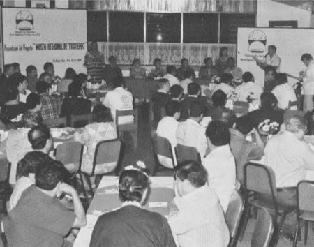
Presentación del proyecto relativo al Museo Regional de Tuxtepec a la titular del Instituto Oaxaqueño de las culturas, personalidades del ámbito cultural y medios de comunicación, en las instalaciones de la Casa de la Cultura «Dr. Víctor Bravo Ahuja», en el año de 1996.
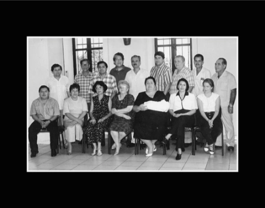
Reunión de trabajo de integrantes del patronato y amigos del Museo Regional, con el Lic. José Iturriaga de la Fuente, Director General de Culturas Populares, durante su visita a la ciudad de Tuxtepec.
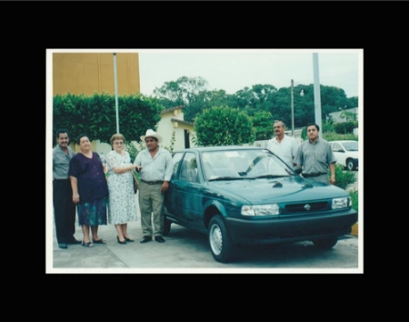
Entrega de coche rifado por el patronato del museo al ganador del sorteo efectuado conforme a la Lotería Nacional; la entrega se realiza en las instalaciones de la Casa de la Cultura «Dr. Víctor Bravo Ahuja». La finalidad del sorteo, recaudar recursos económicos para la construcción del Museo Regional.
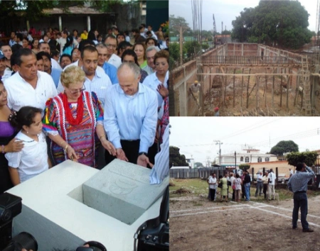
Serie fotográfica que muestra en la imagen principal, la colocación de la 1°. Piedra del Museo Regional por parte del sr. Alfredo Harp Helú y la Sra. Ana María Llarena Triana, presidenta del Patronato Proconstrucción del Museo Regional de Tuxtepec, Oax., A.C. En las otras imágenes, el trazo en el terreno y el inicio de la construcción de la infraestructura cultural.
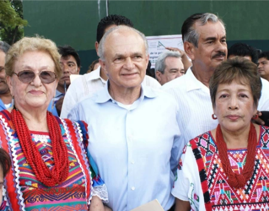
En la imagen se observa en primer plano, a la Sra. Ana María Llarena Triana, Mtra. Gloria E. Cruz López (+) y Sr. Fernando Romero Guerrero, en su calidad de Presidenta, Secretaria y Tesorero, respectivamente, del patronato del museo, arropando la presencia del Sr. Alfredo Harp Helú, Presidente de la fundación que lleva su nombre y aportante de una cantidad de recursos económicos considerable para el inicio de dicho proyecto.
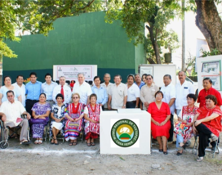
Foto del recuerdo con integrantes del patronato y amigos del Museo Regional, una vez colocada la 1°. Piedra que marca el inicio de la construcción del inmueble cultural referido. De ese equipo inicial, siete ya fallecieron.
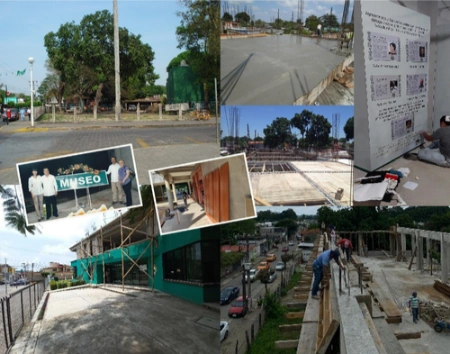
Mosaico de fotografías que muestran varios aspectos del proceso de construcción del referido museo regional, incluyendo actividades de recaudación de recursos económicos en el inmueble en construcción detenida por falta de aportación comprometida y no cumplida.
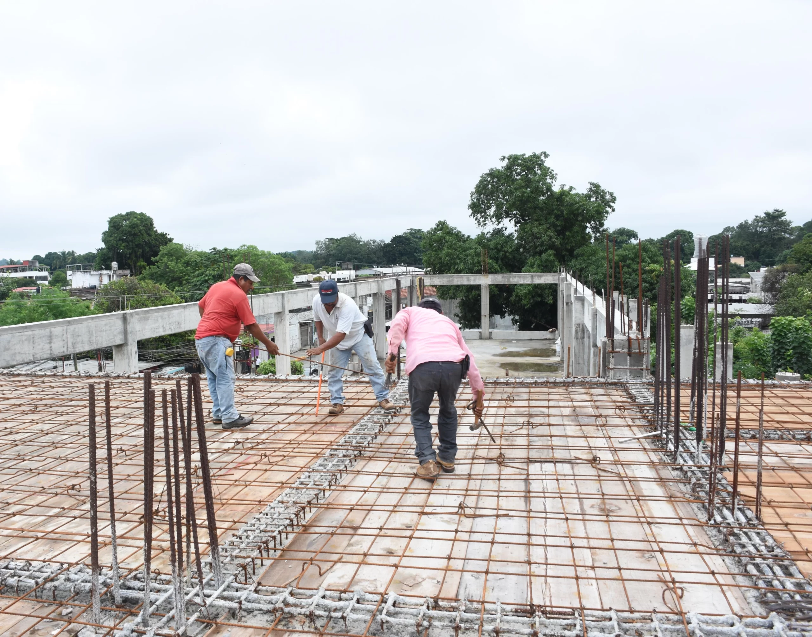
La imagen muestra el «emparrillado» de varillas, previo al proceso conocido como colado de la loza, en la parte frontal del 2° nivel del Museo Regional Casa Verde.
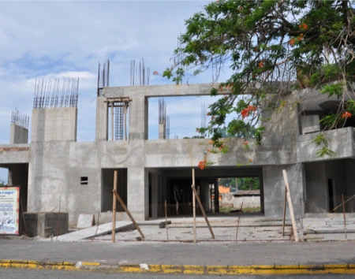
La fotografía muestra un avance considerable en la construcción de la parte frontal del Museo Regional.
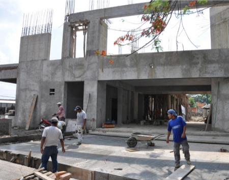
Otro aspecto de los trabajos de construcción del Museo Regional, vista desde la parte frontal.
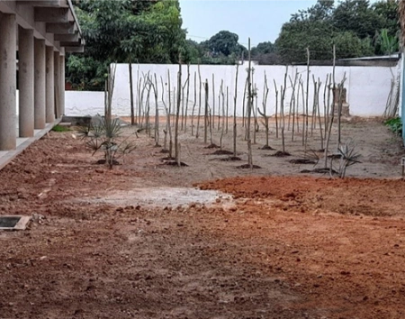
La fotografía muestra el sembrado de «tutores» en el área ahora denominada «Jardín Botánico de Vainilla Chinanteca», localizado en el interior del inmueble del Museo Regional.
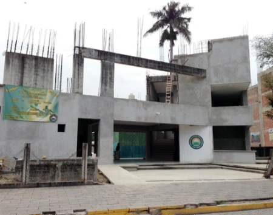
Otra vista de la obra en construcción del Museo Regional de Tuxtepec.
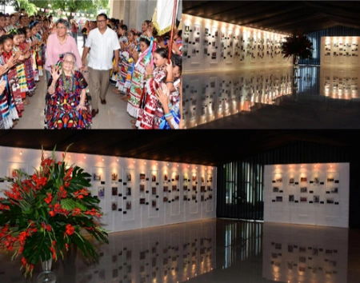
Cuando la construcción del Museo Regional se detuvo por falta de recursos económicos comprometidos y no cumplidos, en el edificio inconcluso, se llevaron a cabo algunas actividades vinculadas con temas culturales, entre ellas, la exposición fotográfica relativa al LX aniversario del baile Flor de Piña; aquí, tres aspectos de ella.
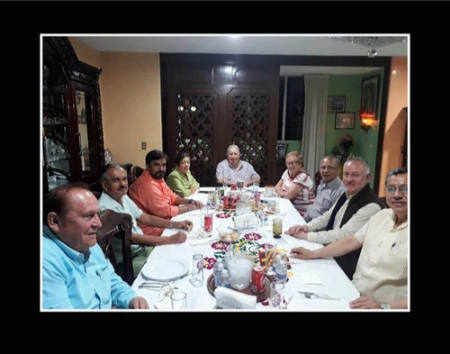
La casa de la Familia Ahuja Llarena, fue durante muchos años, sede de las reuniones del patronato del museo; en esta fotografía se muestra una de ellas, con la presencia del Mtro. Ignacio Toscano Jarquín (+), titular en turno de la Secretaria de las Culturas y Artes de Oaxaca, a quien debemos la revisión y actualización del proyecto conceptual y arquitectónico del Museo Regional que agregó el tema de la bicultura, el tercer piso (Sala Gastronómica), con elevador panorámico (por construir).
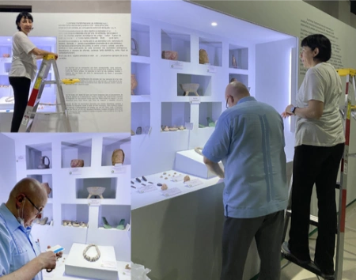
Montaje de exposiciones en la Sala de Arqueología, a cargo de la Dra. Edith Ortiz Díaz, Investigadora del Instituto de Investigaciones Antropológicas de la Universidad Nacional Autónoma de México (UNAM).
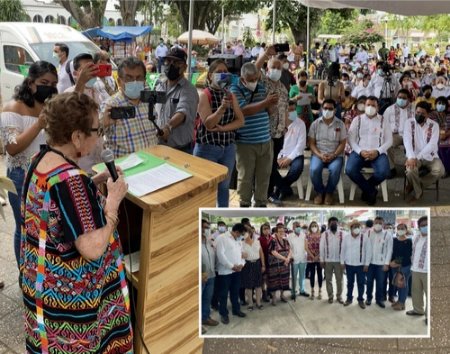
Dos aspectos de la inauguración de la planta baja del Museo Regional de Tuxtepec; en la imagen principal, se observa a la Sra. Ana María Llarena Triana, Presidenta del Patronato del Museo, leyendo su discurso oficial, que destaca entre otras cosas, que, aunque la espera fue larga (31 años), de superar muchas adversidades, finalmente ¡Sí se pudo!, y por lo que hoy, tenemos Museo Regional.
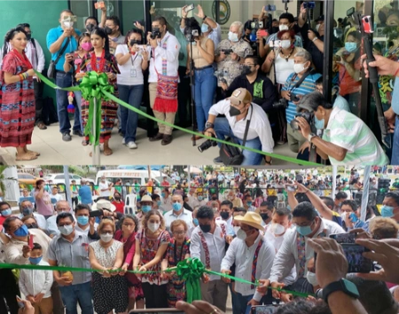
Dos aspectos importantes del momento del corte del listón, con el que simbólicamente se inaugura el Museo Regional de Tuxtepec, después de una larga espera de 31 años.
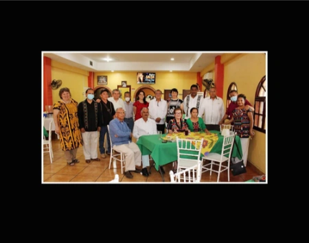
Después de la ceremonia de la inauguración del Museo Regional, los integrantes del patronato y amigos, conviven para estrechar aun más, los lazos fraternidad y posan para una fotografía de acuerdo en el Restaurant Hermilo de esta ciudad.
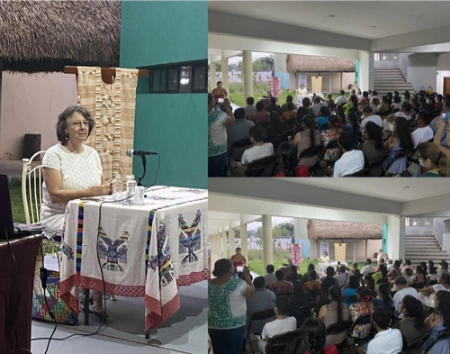
Una vez inaugurado el Museo Regional, no solo recibe visitantes para conocer el contenido de sus cuatro salas de exposición (Arqueología, Historia, Textiles y Vainilla Chinanteca), sino que también es sede de conferencias sobre temas culturales de alto impacto. En la imagen se observan tres aspectos de la conferencia de la Mtra. Marta Turok, reconocida nacional e internacionalmente por su conocimiento sobre el arte popular, principalmente es experta en textiles.
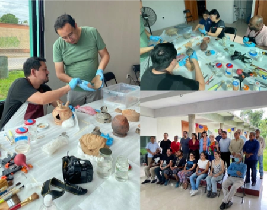
Tres aspectos de los trabajos del equipo multidisciplinario de la UNAM que coordina la Dra. Edith Ortiz Díaz, realizando trabajos de restauración, clasificación y registro de piezas arqueológicas en el Museo Regional Casa Verde de Tuxtepec.
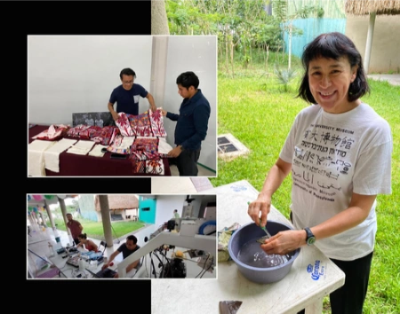
Otros tres aspectos de los trabajos del equipo de trabajo multidisciplinario de la UNAM, realizados dentro de las instalaciones del Museo Regional Casa Verde de Tuxtepec.
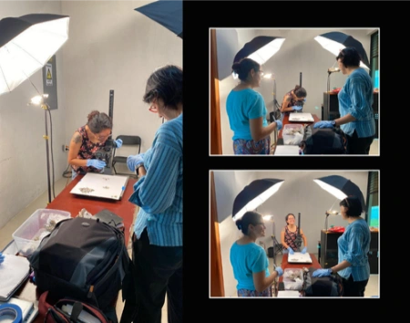
En las tres imágenes se observa a la Dra. Edith Ortiz Díaz, con parte del equipo multidisciplinario de la UNAM, realizando trabajos en el Museo Regional Casa Verde de Tuxtepec.
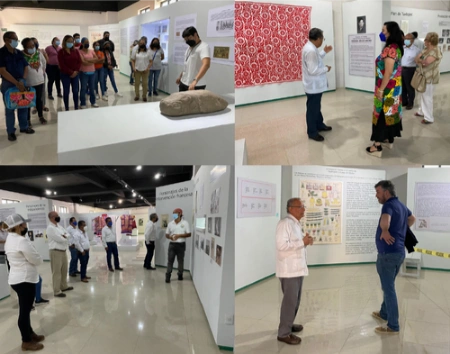
Cuatro aspectos del interior de las salas de exposición del Museo Regional Casa Verde de Tuxtepec, es de destacar, que en sus inicios, los jóvenes de servicio social de la UMAD fueron capacitados para ser líderes en las visitas guiadas, sobre todo de escolares, realizando un trabajo excepcional.
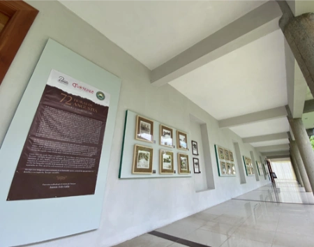
Aspectos del denominado Corredor del Arte Indígena Afroamericano y Mestizo que muestra la Exposición fotográfica «72 horas de angustia», de Don Teodoro Acevedo Villamil, relativa a la inundación de Tuxtepec del año de 1944.
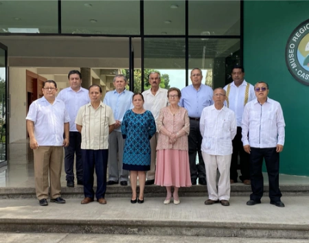
Foto del recuerdo de los integrantes del Patronato Profundación del Museo Regional de Tuxtepec, Oax., A.C.
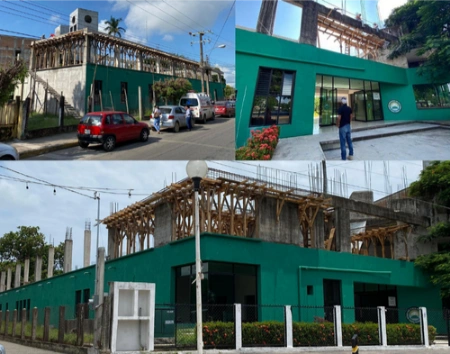
Tres aspectos de los trabajos de construcción del 2°, Nivel del Museo Regional Casa Verde de Tuxtepec.
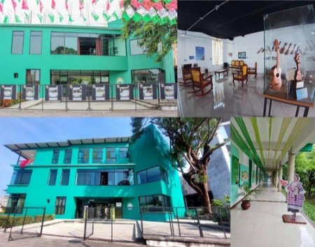
De las cuatro imágenes de esta serie, dos de ellas (lado izquierdo), muestran la conclusión del 2° y 3° nivel. La imagen superior del lado derecho muestra el interior de la Sala denominada Fonoteca Elías Meléndez dedicada al Sotavento Oaxaqueño. La fotografía de la parte inferior derecha, muestra el actual Corredor del Arte Indígena, Afromexicano y Mestizo, ubicado en planta baja.
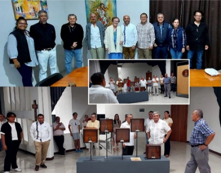
Mosaico de fotos que muestran a integrantes del Patronato del Museo, realizando labores de atención a funcionarios estatales y filántropos del MUCAVE y explicando cómo funciona la Inteligencia Artificial puesta al servicio del museo, por alumnos de servicio social del Instituto Tecnológico de Tuxtepec.
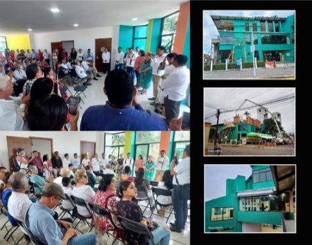
En este paquete de fotos, las correspondientes al lado izquierdo (2), son de la inauguración del 3er nivel; las otras 3 del lado derecho, a diferentes momentos de la construcción y foto de conjunto vistas desde el interior y exterior del MUCAVE.
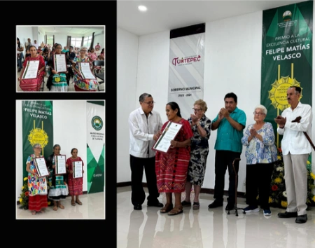
Debido a que en la 2°, Planta del Museo existe una Sala de Exposición dedicada a Felipe Matías Velasco, eminente artesano y poeta costumbrista de Tuxtepec, el patronato del museo y el propio Museo Regional crearon el premio Felipe Matías Velasco a la excelencia artesanal para reconocer la trayectoria de tres artesanas con trayectoria mayor a 30 años: una chinanteca de Rancho Grande, Valle Nacional, una mazateca de San Pedro Ixcatlán y una mestiza de Tuxtepec. Aquí la ceremonia de premiación.
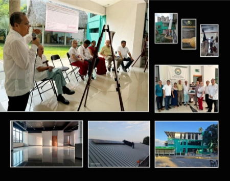
Este mosaico de fotografías muestran múltiples aspectos del Museo Regional, desde actividades realizadas, hasta la colocación de paneles solares que buscan la sustentabilidad del edificio en la relación al consumo de energía eléctrica y la develación de la placa con que se designa con el nombre de Ana María Llarena Triana a la sala audiovisual del MUCAVE, ubicada en la segunda planta.
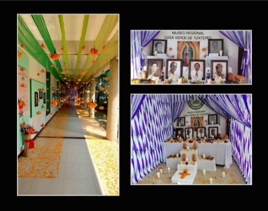
La celebración de Días de Muertos es una actividad obligada para el Museo Regional; por ellos se han realizado muestras que nos permiten honrar a integrantes del Patronato del Museo que ya se nos adelantaron pero cuya memoria sigue viva entre nosotros: Algimiro Ochoa, Dulce María Rivera, Miguel Vélez Arceo, Felipe Matías Velasco, Gabriel Cuevas Gómez y Gloria E. Cruz López.
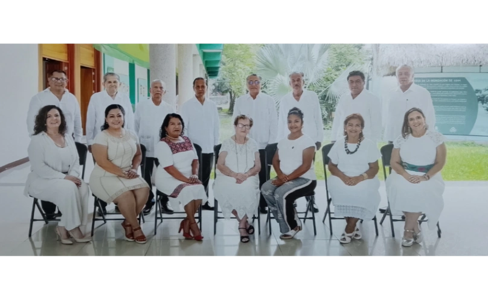
FOTO OFICIAL DE LOS ACTUALES INTEGRANTES DEL PATRONATO PROFUNDACION DEL MUSEO REGIONAL DE TUXTEPEC, OAX.
Sentadas de izquierda a derecha: María de la Soledad de la Iglesia Urtiaga, Gloria Alexandra Ávila Fernández, María Jeronimo Santiago, Ana María Llarena Triana, Eréndira Armas Aguirre, María Elena Rangel Parra y Laura Begoña de la Iglesia Urtiaga.
De pie, en el mismo orden: Rodolfo Lavalle Acevedo, Miguel López Rodríguez, Elías García Martínez, Tomas García Hernández, Roger Merlín Arango, Fernando Romero Guerrero, Santiago Méndez Agama y Eduardo Sequeda Marcelo.